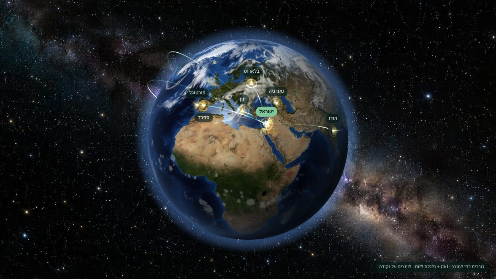
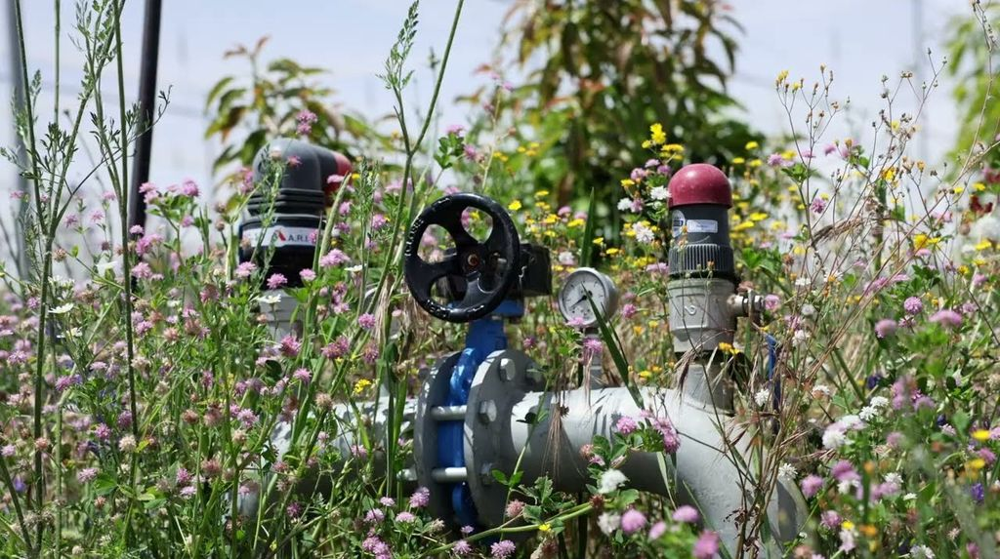

פרויקטים של בתי רשת בישראל ובעולם
בתי רשת בשלוש יבשות. אנחנו מתכננים את הפרויקט, ומנהלים את הביצוע בשטח עד מסירה ללקוח
בית רשת אטום עם דלת כניסה ורשת מש למניעת כניסת חרקים. ארכיון מיפתח.
הפרויקטים על הגלובוס
גררו כדי לסובב, התקרבו לישראל, ולחצו על נקודה כדי לראות את הפרויקט.

| מדינה | פרויקט |
|---|---|
| מקסיקו | בתי רשת |
| הודו | בתי רשת |
| הונדורס | בתי רשת |
| ספרד | בתי רשת |
| גאורגיה | בתי רשת |
| פורטוגל | חווה חקלאית ובתי רשת |
| בלארוס | מערכות מתקדמת לגידול דגים |
| יוון | פרויקט חקלאי |
בתי רשת למטע אבוקדו בפורטוגל, עם Atlantrees
שיתוף פעולה מעולה של מיפתח עם Atlantrees, מגדלת אבוקדו במרכז פורטוגל. בסרטון: השטח לפני, ואותו שטח אחרי, מתחת לבתי הרשת.

איפה עבדנו בישראל
קיבוצים, מושבים וחוות, מרמת הגולן ועד אילת.
מועצה אזורית מטה אשר
- יחיעם
- חניתה
- מצובה
- ראש הנקרה
- גשר הזיו
- בית העמק
- געתון
- לוחמי הגטאות
- כפר מסריק
- אדמית
- שבי ציון
- רגבה
- סער
- כברי
- נתיב השיירה
- בן עמי
- בצת
- עין המפרץ
- שמרת
עכו
- פנימיית מנוף
מועצה אזורית מעלה יוסף
- שומרה
- אבן מנחם
מועצה אזורית מרום הגליל
- כרם בן זמרה
מועצה אזורית גליל עליון
- סאסא
- ברעם
- ירון
- מנרה
- שמיר
- דפנה
- דן
מועצה אזורית מבואות החרמון
- דישון
- מרגליות
מועצה מקומית מטולה
- מטולה
מועצה אזורית גולן
- רמת מגשימים
- אורטל
- אלוני הבשן
- אל-רום
- אפיק
- נטור
- יונתן
- אבני איתן
- מעלה גמלא
- מרום גולן
- עין זיוון
- קדמת צבי
- קשת
מועצה מקומית קצרין
- יקב רמת הגולן
מועצה אזורית משגב
- יודפת
מועצה אזורית עמק יזרעאל
- הרדוף
מועצה אזורית עמק הירדן
- עין גב
- אפיקים
- אשדות יעקב
- בית זרע
- גינוסר
- תל קציר
- חוקוק
מועצה אזורית עמק המעיינות
- גשר
- מעוז חיים
- ניר דוד
מועצה אזורית גלבוע
- מולדת
- עין חרוד
מועצה אזורית זבולון
- רמת יוחנן
- כפר המכבי
מועצה אזורית גזר
- נען
מועצה אזורית יואב
- רבדים
מועצה אזורית שער הנגב
- גבים
- ניר עם
מועצה אזורית אשכול
- דקל
- נירים
- עין השלושה
מועצה אזורית רמת נגב (פתחת ניצנה)
- כמהין
- ניצנה
מועצה אזורית הערבה התיכונה
- עידן
- צופר
- פארן
מועצה אזורית חבל אילות
- יטבתה
אילת
- אילת
פרויקטים נבחרים
שמות לקוחות מופיעים רק באישורם. המלצות מלקוחות בישראל ובפורטוגל, לפי בקשה.
- קיוויבית רשת עם הדליית סוכהבאזור הגליל העליון
- בננותבית רשת לבננות עם רשת 11%באזור הגליל המערבי
- תפוחיםבית רשת למטעיםרמת הגולן
- אבוקדוחווה חקלאית ובתי רשתפורטוגל
מהפרויקטים שלנו
בתי רשת, הצללה, הקמה, קיפול ועונות השנה, מצולמים בפרויקטים שלנו.
מהאוויר
5 תמונותבית רשת לבן בין מטעים ויער, לאורך דרך עפר
בית רשת גדול בין המטעים
בתי רשת ומטעים, והחרמון ברקע
שדות של בתי רשת, טורבינות רוח והחרמון
בתי רשת וטורבינת רוח, מבט מהאוויר
קיווי מתחת לרשת
3 תמונותלאורך המעבר בין שורות הקיווי, והרשת מקופלת לאורך השורות
עמוד מגולוון עם תומכת T לקיווי, והרשת מקופלת מעליו
עלי קיווי בשמש, מתחת לרשת
בתי רשת
9 תמונותבית רשת לבן בין יער למטעים
בתי רשת גדולים בעמק, ליד מבני משק
בתי רשת ושורות גידול, מבט מלמעלה
שדה של בתי רשת לבנים
בתי רשת מקושתים עם מבנה שירות
בית רשת מקושת עם חזית פתוחה
בית רשת ארוך עם דפנות רשת כהות
בתי רשת לאורך דרך שדה
מבנה מקושת עם רשת ויריעות צבעוניות
הקמה בשטח
10 תמונותפריסת רשת לבנה מבמת הרמה מעל שתילים צעירים
עובד ברתמה מותח כבל לפני פריסת הרשת
רשת נגד ברד עולה בין העמודים
במת ההרמה וצוות השטח בזמן פריסת הרשת
עובד ברתמה בסל במת ההרמה, ליד עמודים מגולוונים
מצוות השטח שלנו
פריסת העמודים המגולוונים עם צוות העובדים המקומי, פרויקט בהודו
עבודה בבסיס העמוד בשורת המטע
ליד עמוד בין השורות
במת ההרמה בין השורות, והרשת אסופה על הכבל
עבודה על הרשת
10 תמונותעבודה על הרשת האסופה בכבל הרכס
טיפול ברשת מסל במת ההרמה
במת ההרמה נעה לאורך השורה
רצועות הרשת יוצאות מבמת ההרמה
הכוונת רצועת הרשת מהסל
במת ההרמה בין דפנות הרשת
למעלה ברכס, בין שתי דפנות רשת
יד אל הכבל ברכס
מבמת ההרמה, מתחת לרשת לבנה
מתחת לרשת, מסל במת ההרמה
הצללה לאזורי תפעול
4 תמונותסככת תפעול עם רשת הצללה ירוקה
סככת התפעול, מבט מלמעלה
רשת הצללה כחולה מעל משטח
רשת כחולה ליד מטע
מתחת לרשת
9 תמונותרצועות הרשת נפגשות מעל השורות, מבט מלמטה
קו הרכס בין שתי רצועות
מטע צעיר מתחת לרשת
מבט רחב מתחת לרשת
הרשת מעל מטע צעיר, וטורבינת רוח ברקע
עץ שנראה מבעד לרשת
אור השמש מבעד לרשת והתפסים על הרכס
גפנים מטפסות מתחת לרשת
מעבר ארוך מתחת לרשת
המבנה והעמודים
9 תמונותנסבך מגולוון
הכבל מוברג דרך מסגרת מגולוונת
עמודי שוליים נוטים החוצה, עם כבלי עיגון
שולי המבנה, וטורבינת רוח ברקע
רשת הכבלים מעל השורות
שורות עמודים לאורך מעבר במטע
עמודים מגולוונים לאורך דרך המטע
עמוד מגולוון וכבלים מעל מטע צעיר
בית רשת מעל מטע צעיר
מקופלת לחורף
5 תמונותהרשתות אסופות על כבלי הרכס
שורות של רשת מקופלת, מבט מהצד
רשתות מקופלות מעל שדה פורח
רשתות קשורות בין העמודים
צרורות רשת קשורים בראשי העמודים
מטעים בפריחה
4 תמונותמטע בפריחה מתחת לרשת
שורות בפריחה וטורבינת רוח
פריחה מקרוב, מתחת לרשת
ענף פורח מתחת לרשת
הדליה
3 תמונותצמחים על הדליית סוכה מתחת לרשת
חוטי הסוכה מתחת לרשת
חלקה מודלית מתחת לרשת
במטעים
4 תמונותבדיקת הצמחים בהדליית הסוכה
יד אל ענף בהדליית הסוכה
בין שורות המטע
במטע פורח, מתחת לרשת
מבחוץ
9 תמונותרשתות צד יורדות באלכסון אל הקרקע
רשת צד ארוכה לאורך דרך עפר
דופן בית רשת, והחרמון ברקע
בית רשת סגור, מבט מהצד
פינת בית רשת וטורבינת רוח
פינת בית רשת עם רשת צד סגורה
בית רשת לאורך דרך עפר
חזית בית רשת, מבט מהדרך
בית רשת לבן בנוף
מתכננים פרויקט כזה?
התקשרו אלינו עם המיקום, הגידול והשטח, או הכינו קודם את פרטי הפרויקט באתר.